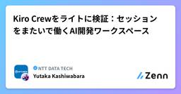

NTT DATA TECHのフィード
https://zenn.dev/p/nttdata_tech
NTT DATA公式アカウントです。 技術を愛するNTT DATAの技術者が、気軽に楽しく発信していきます。 当社のサービスなどについてのお問い合わせは、 お問い合わせフォーム https://nttdata.com/jp/ja/contact-us/ へお願いします。
フィード

SAP BDCナレッジ集：SAP BDC × Snowflake ゼロコピー連携を検証してみた【後編】
NTT DATA TECHのフィード
自己紹介2000年代後半からSAPベーシス、2025年からSAP BDCとJouleを専門に働いています。今でもSAP GUIでワークロード分析などをやっています。JouleやBDCなどの新しい技術が大好きですが、旧来の技術も大好きです。2026年7月29日に開催されたSAP NOWに参加してきました(スポンサー枠です)。今回、私は登壇していませんが、講演資料の準備やリーフレットの準備、当日のブース対応などに少し関わらせていただきました。会場では「Techブログを見ています」と声をかけてくださった方もいて、とてもうれしかったです。ありがとうございます！読んでくださっている方...
2日前

Kiro Crewをライトに検証：セッションをまたいで働くAI開発ワークスペース
NTT DATA TECHのフィード
1. はじめに2026年8月5日、Kiro Crewが公開されました。https://kiro.dev/crew/Kiro Crewは、Kiro CLIを実行基盤として、自分のPCやサーバー上で動かせるオープンソースの開発ワークスペースです。公式ページでは、セッションをまたぐMemory、定期実行、長時間タスク、複数エージェントの並列実行、Webダッシュボードなどが紹介されています。Kiro IDEやKiro CLIを置き換えるというより、Kiro CLIと既存の.kiro設定を使いながら、作業をセッションの外まで広げるプロダクトという位置付けです。今回はEC2上のUbun...
3日前
Amazon Bedrockで生成AI評価を実践――Operational MetricsからAgentic Metricsまで
NTT DATA TECHのフィード
1. はじめに生成AIアプリケーションを評価する際、回答が正しいかどうかだけを確認していないでしょうか。実際に生成AIやAIエージェントを運用する場合は、回答品質に加えて、次のような観点も必要です。応答にどれくらい時間がかかるかトークンやコストがどれくらい発生するかツールを正しく選択できているかツール実行に失敗した場合、最終回答がその結果と整合しているか評価に利用するLLM Judge自体を信頼できるか今回は、AWS Samplesで公開されているsample-gen-ai-evaluations-workshopを実行し、生成AIの評価をどのように分解して考えれ...
5日前

Amazon Bedrock Agents Classic から Amazon Bedrock AgentCore Harness へ
NTT DATA TECHのフィード
1. はじめに!要約/結論Amazon Bedrock Agents は Amazon Bedrock Agents Classic に名称変更され、メンテナンスに移行しました（既存利用者は継続利用可）Bedrock Agents Classicの代替としてAmazon Bedrock AgentCore上に新しいAIエージェントを構築する場合、AgentCore Harness（設定中心）とAgentCore Runtime（コード中心）が主な選択肢になります。本記事では AgentCore Harness を実際にデプロイし、Memory・ログ・exportによる A...
10日前
Kiro IDE 1.0.242をAWS CDKで検証――Ask Kiro to FixとHookによる自動ビルド
NTT DATA TECHのフィード
1. はじめに2026年7月28日、Kiro IDE 1.0.242が公開されました。今回のアップデートでは、主に以下の機能が追加・改善されています。エディタの右クリックメニューにKiroサブメニューを追加エラーや警告に対するAsk Kiro to Fixを追加Agent Hookをフォームから作成できるガイド付きUIを追加ベースとなるCode OSSをv1.108.2へ更新IDEの表示言語に応じた応答やチャット履歴を改善本記事では、AWS CDKのTypeScriptプロジェクトを使い、次の開発ループを検証します。IDEが型エラーを検出 ↓Ask Kir...
10日前
大規模バッチ処理でスポットインスタンスを活用するためのAWS Batch設計ポイント
NTT DATA TECHのフィード
はじめにデータマネジメントPF統括部の平尾です。大規模・長時間のバッチ処理を実行する時、AWS（EC2）の利用料は高額になりやすいです。コスト削減策として、AWSの未使用EC2キャパシティ（AWSが各リージョン内のAZごとに提供できる、インスタンスタイプ別のコンピュートリソース量）を低コストで利用できるスポットインスタンスの活用を検討することが多いと思います。一方で、AWS側のキャパシティ状況によってインスタンスが中断される可能性があるため、特に大規模・長時間の処理への適用が難しいという特性があります。本記事では、大規模なバッチ処理を実行するのに適したAWS Batchとい...
12日前
Sol／Terra／Lunaの比較からキャッシュ検証まで ― GPT-5.6 on Amazon Bedrock実践
NTT DATA TECHのフィード
1. はじめに2026年7月13日、OpenAIのGPT-5.6 Sol、Terra、LunaがAmazon Bedrockで一般提供されました。さらに2026年7月24日には、AWSから次の内容を含む実践手順が公開されています。https://aws.amazon.com/jp/blogs/machine-learning/get-started-with-openai-gpt-5-6-sol-terra-and-luna-on-amazon-bedrock/OpenAI Responses APIを使った最初の推論reasoning effortの指定ツール呼び出し...
13日前
AIエージェントはAWSを正しく操作できるか？aws-benchの仕組みと実行手順
NTT DATA TECHのフィード
1. はじめにAIコーディングエージェントの活用範囲は、コード生成だけでなく、AWS（Amazon Web Services）環境の調査、構築、障害対応にも広がりつつあります。例えば、AIエージェントに次のようなAWS関連の作業を依頼することが考えられます。AWS環境の設定やログを確認し、問題の原因を調査する複数のAWSサービスにまたがる構成を確認する指定された要件に沿ってAWSリソースを作成する設定不備を修正し、AWSリソースを期待する状態へ変更するただし、AIエージェントが「原因を特定しました」「修正しました」と回答しただけでは、実際の調査結果やAWSリソースの...
14日前
AWS Summit Japan 2026から見る、AI-DLCの現在地
NTT DATA TECHのフィード
1. はじめに生成AIやAIエージェントの活用が広がる中で、ソフトウェア開発の現場でもAI活用が進んでいます。これまでは、コーディング支援、テストコード生成、ドキュメント作成、コードレビュー補助など、開発工程の一部にAIを使うケースが多かったと思います。一方で、AWS Summit Japan 2026の各セッションを見ても、最近は「AIでコードを書く」だけでなく、要件定義、設計、実装、テスト、デプロイ、運用まで含めて、開発ライフサイクル全体をAI前提で見直す流れとなっています。その文脈で重要になるのが、AI-DLC（AI-Driven Development Lifecyc...
15日前
AWS AI Leagueを自身のAWS環境で試す ─ Community Editionのデプロイ
NTT DATA TECHのフィード
1. はじめに前回の記事では、AWS AI League Community Editionの全体像と、利用できる主な機能を紹介しました。https://zenn.dev/nttdata_tech/articles/402acac4a19180今回は、Amazon EC2をデプロイ端末として利用し、Community Editionを自身のAWSアカウントへ構築します。本記事のゴールは、AWS CDKによるデプロイを完了し、ブラウザからCommunity Editionへログインできることを確認するところまでです。実際のAgentic AIやファインチューニングの操作は、次...
15日前
AWS AI Leagueを自身のAWS環境で試す ─ Community Editionの全体像
NTT DATA TECHのフィード
1. はじめに以前、以下の記事でAWS AI Leagueについて紹介しました。https://zenn.dev/nttdata_tech/articles/a907eb00cbbe4bAWS AI Leagueは、競技形式で生成AIの技術を学ぶプログラムです。主に、次の2つのテーマが用意されています。Amazon SageMaker AIを利用したモデルのファインチューニングAmazon Bedrock AgentCoreを利用したAgentic AIAgentic AIチャレンジでは、AIエージェントがマップ上を移動し、コインの取得や質問への回答などを行いながら、...
16日前
AWS Summit Japan 2026から見る、Amazon Bedrock AgentCoreの現在地
NTT DATA TECHのフィード
1. はじめに生成AIやAIエージェントを業務で活用する動きが広がる中で、最近は「AIエージェントをどう作るか」だけでなく、AIエージェントをどう本番運用するかが重要なテーマになってきています。PoCでは、LLMにツールを呼び出させたり、RAGと組み合わせたりすることで、比較的短期間で動くものを作ることができます。一方で、本番利用を考えると、次のような課題が出てきます。エージェントをどこで安全に実行するのかユーザーやエージェントの認証・認可をどう扱うのか外部SaaSや社内APIへのアクセス権限をどう制御するのかデータ、ナレッジ、ツール、業務ルールをAIが理解・活用しや...
16日前
AWS Summit Japan 2026から見る、AIエージェントのセキュリティ・ガバナンス
NTT DATA TECHのフィード
1. はじめに生成AIやAIエージェントの活用が広がる中で、最近は「AIエージェントをどう作るか」だけでなく、AIエージェントをどう安全に業務へ組み込むかが重要なテーマになってきています。従来の生成AIセキュリティでは、プロンプトインジェクション、ハルシネーション、不適切な出力、機密情報の漏えいといった、モデルの入出力に関する論点が中心でした。しかし、AIエージェントでは状況が少し変わります。AIエージェントは、単に回答を生成するだけではありません。外部APIを呼び出し、SaaSにアクセスし、データベースを検索し、チケットを作成し、場合によっては業務システムに対して操作を行い...
16日前
Claude Codeの利用量・コスト・コミットをCloudWatch Coding Agent Insightsで可視化
NTT DATA TECHのフィード
1. はじめにAIコーディングエージェントを組織で利用する場合、単に利用環境を提供するだけでなく、次のような情報も把握したくなります。どのモデルが、どの程度利用されているかトークンやコストがどれくらい発生しているかユーザーや部門ごとの利用状況に偏りがないかコード編集やGitコミットなどの開発作業につながっているか2026年7月20日、AWS（Amazon Web Services）がAmazon CloudWatchにCoding Agent Insightsを追加したことを発表しました。https://aws.amazon.com/jp/about-aws/wha...
18日前
DASH 2026 @New York 参加レポート
NTT DATA TECHのフィード
はじめに2026年6月8日〜10日、ニューヨークのJavits Centerで開催された「DASH 2026」に参加してきました。1日目はPartner企業向けのPartner Summitに参加し、Datadogをお客様の環境にどう導入し、活用してもらうかといった話を中心に聞くことができました。メインとなる後半2日間では、Keynoteや各種セッション、展示ブースを回りました。今年のDASHでは、「AI for Datadog」と「Datadog for AI」の2つが大きなテーマになっていました。この記事では、現地で感じたこと、印象に残ったセッション、そして自分なりに持ち...
18日前
AIコーディングエージェントCLIを実測で比較する：agent-cost-benchをAWS上で試す(cli-compare)
NTT DATA TECHのフィード
1. はじめに前回の記事では、AWS（Amazon Web Services） Samplesで公開されている sample-agent-cost-bench を使い、Kiro CLI上で複数モデルを比較しました。https://zenn.dev/nttdata_tech/articles/130bd43f48e425前回利用したのは model-compare です。これは、同じCLI上で複数のモデルを比較し、成功率・コスト・実行時間を確認するためのモードです。今回はその続きとして、agent-cost-bench のもう1つの比較モードである cli-compare を試...
18日前
OTセキュリティにおける資産管理の考え方
NTT DATA TECHのフィード
はじめに（本記事の趣旨）近年、製造業や重要インフラにおいて、OT（Operational Technology）システムのサイバーセキュリティ対策が求められています。その中で、「何から始めるべきか」という問いに対して、最初のステップとして「資産の可視化」が挙げられることが多くあります。しかし、「資産の可視化」と言っても、具体的に何をどこまで実施すればよいのかは必ずしも明確ではありません。OTセキュリティにおける資産管理とは何を指し、どのように整理していくべきかを考えることが重要です。本記事では、OTセキュリティにおける資産管理を検討する上で参考となるガイダンスのひとつとして、...
23日前
AIコーディングエージェント選定を“感覚”から“数字”へ：agent-cost-benchをAWS上で試す
NTT DATA TECHのフィード
1. はじめにAIコーディングエージェントの活用が広がる中で、開発現場では次のような問いが増えてきました。Kiro、Claude Code、GitHub Copilot、Codexなど、どのツールを選ぶべきか同じツールでも、どのモデルを使うべきか高性能なモデルを使うコストは、品質向上に見合っているのかチームや案件全体に展開したとき、費用対効果をどのように説明するのかAIコーディングエージェントは、単純に「一番賢いモデルを使えばよい」というものではありません。簡単な修正であれば軽量なモデルで十分な場合もあります。一方で、既存コードベースをまたぐ修正や、IaCの変更など...
23日前
【DataRobot】解説！AIアクセラレーター ～DataRobot×Papermill×MLflowの連携編～
NTT DATA TECHのフィード
はじめにこんにちは。NTTデータでデータサイエンティストを務めております@tamurayuc20ndです。本記事では、DataRobot社が提供するAIアクセラレータの一つである「MLflowエクスペリメントの追跡」を題材に、PapermillによるNotebookの自動実行と、MLflowによる実験管理の仕組みを解説します。単にテンプレートを動かすだけではなく、自分のユースケースに合わせてどこを修正すればよいかという観点で整理している点が本記事の主眼です。Notebookベースで機械学習の試行錯誤を進めている方や、実験条件と結果を後から振り返りやすくしたい方の参考になれば幸...
24日前
Web Search on Amazon Bedrock AgentCore：外部送信なしでAIエージェントに最新Web情報を持たせる
NTT DATA TECHのフィード
1. はじめに生成AIやAIエージェントを業務で活用する際、モデルの学習時点以降の情報を扱いたいケースがあります。たとえば、最新のAWS（Amazon Web Services）アップデート、製品ドキュメントの更新、ニュース、競合サービスの情報などを扱いたい場合、モデルの内部知識だけでは不十分です。一方で、金融・公共などデータガバナンスが厳しい領域では、AIエージェントにWeb検索機能を持たせる際に、以下のような点が課題になります。ユーザーのプロンプトや検索クエリが外部の検索APIに送信されないか外部検索APIのAPIキーや認証情報をどう管理するかWeb検索機能のために...
24日前